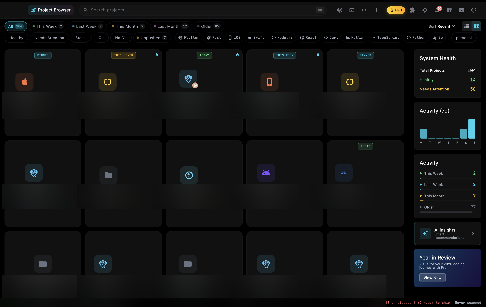
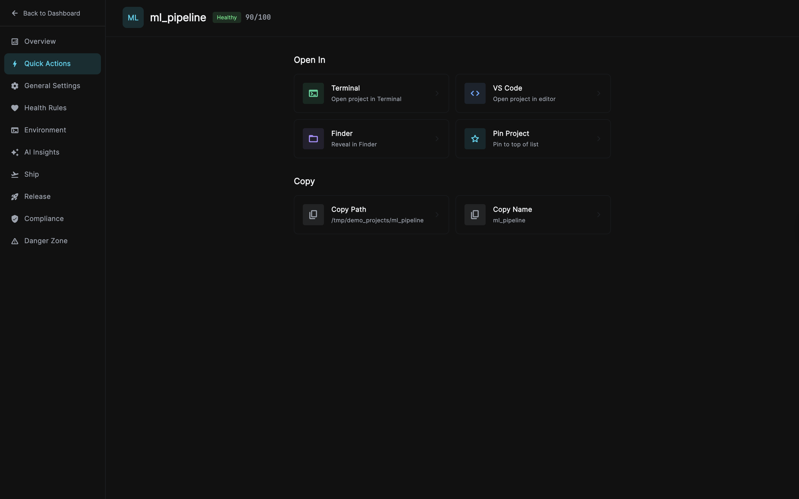
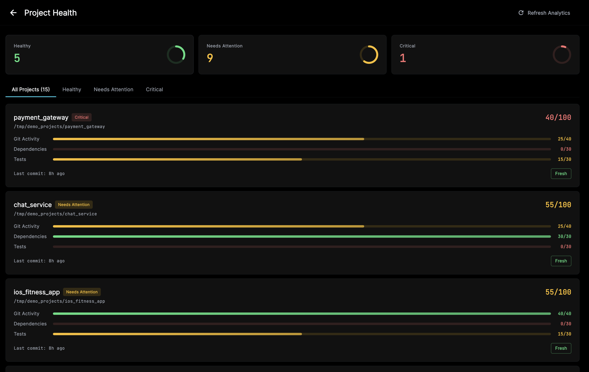
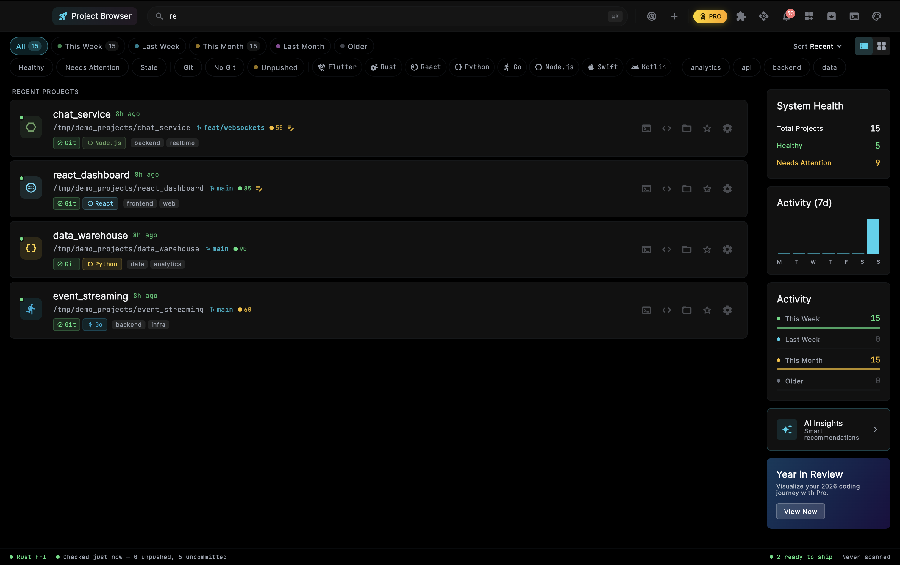
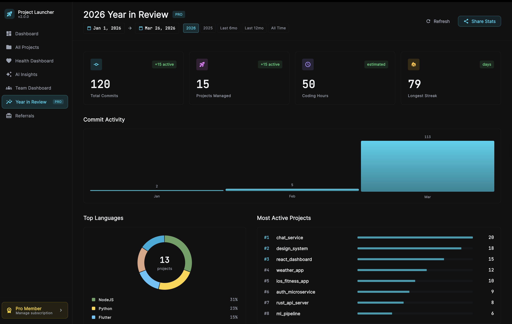
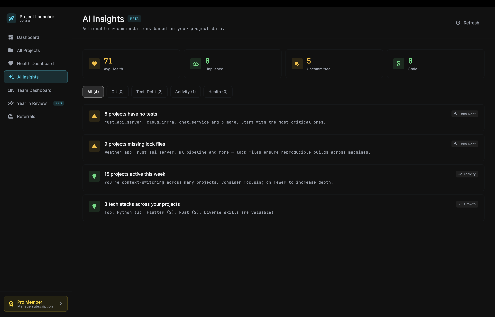
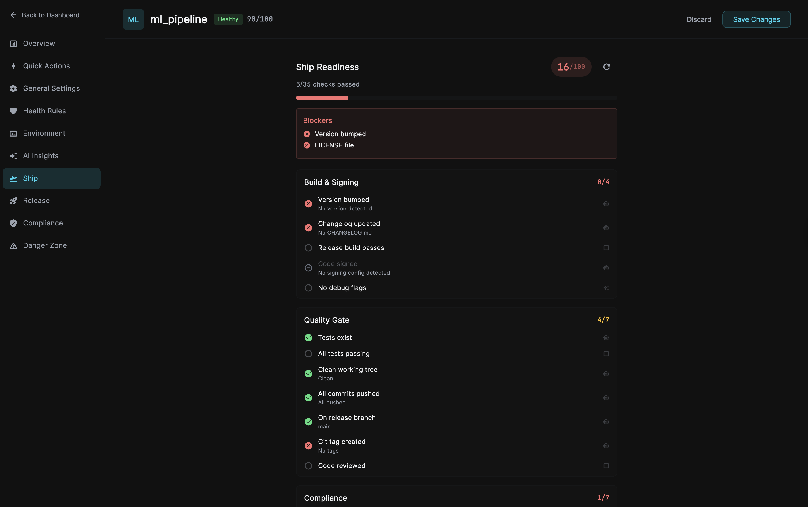
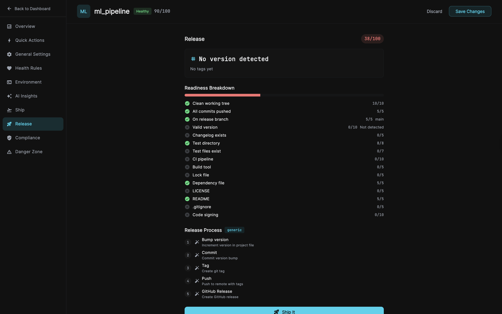
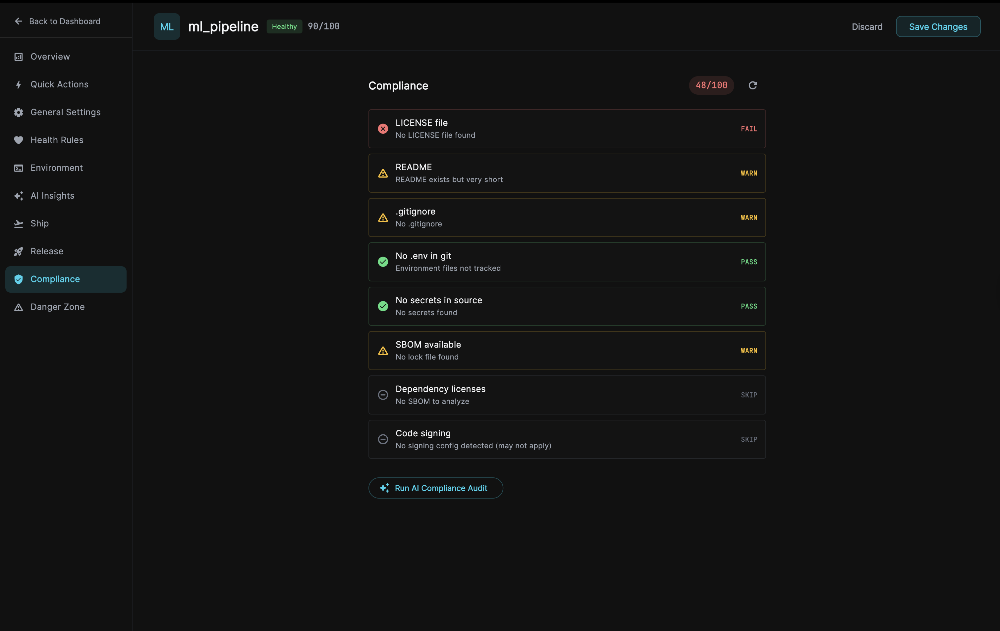
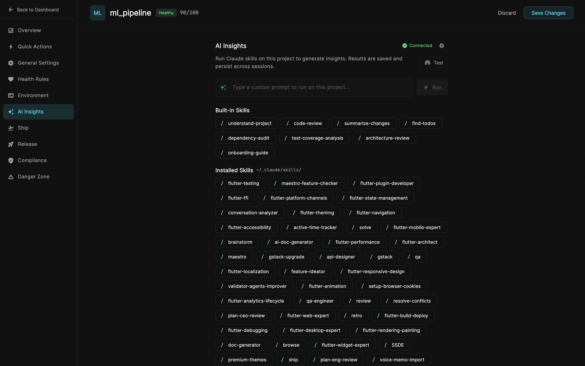

Every project, every language, every tool — one place.
Health scores, git status, instant launch. Stop cd-ing around.

How it works
From scattered folders to a single source of truth.
Point it at your projects folder. It auto-discovers every git repo, detects the tech stack, and builds your dashboard.
Health scores, staleness indicators, unpushed commits, and activity timelines — all at a glance.
One click to open in your editor. Ship readiness checks, release management, and export — right from the dashboard.

One click to open any project in Terminal, VS Code, or Finder. Pin your favorites, copy paths, and jump between projects in seconds.
No more cd ~/Projects/that-thing.

Every project gets a 0-100 health score based on git activity, dependency freshness, and test coverage.
See which projects are healthy, need attention, or are critical — at a glance.

Filter by activity (this week, last month), health status, git state, language, or custom tags.
Auto-detects 17+ languages and frameworks including multi-tech projects like Flutter+Rust monorepos.

Beautiful stats dashboard with total commits, coding hours, longest streak, and top languages.
Shareable cards for your coding journey — branded and ready to share.

Actionable insights powered by your project data — missing tests, lock files, unpushed commits, tech debt patterns.
No cloud, no telemetry. Everything runs locally.

Pre-release checklist with auto-detect, manual, and AI-assisted checks. Version bumped? Tests passing? Clean working tree? All commits pushed?
Smart release process detection follows your project's own workflow.

Readiness breakdown with scoring across git, tests, CI/CD, dependencies, and code signing.
Detected release process with step-by-step execution — bump, commit, tag, push, GitHub Release.

License detection, secret scanning, SBOM generation, .gitignore validation, and code signing checks.
Run an AI compliance audit with one click.

Run Claude skills on any project — code review, dependency audit, test coverage analysis, architecture review, and more.
Built-in skills plus your own custom skills from ~/.claude/skills/.
Compare
| Feature | Project Launcher | VS Code Workspaces | Raycast | GitHub Dashboard |
|---|---|---|---|---|
| Project dashboard | ✓ | ✕ | ✕ | ✓ |
| Health scores | ✓ | ✕ | ✕ | ✕ |
| Git status at a glance | ✓ | ✕ | ✕ | ✓ |
| Works with any language | ✓ | ✓ | ✓ | ✓ |
| Works with any editor | ✓ | ✕ | ✓ | ✓ |
| Local-first (no account) | ✓ | ✓ | ✓ | ✕ |
| Staleness tracking | ✓ | ✕ | ✕ | ✕ |
| Year in Review | ✓ | ✕ | ✕ | ✓ |
| Tech stack detection | ✓ | ✕ | ✕ | ✓ |
| Export & Git Sync | ✓ | ✕ | ✕ | ✕ |
| Ship readiness | ✓ | ✕ | ✕ | ✕ |
| Release management | ✓ | ✕ | ✕ | ✕ |
| Compliance & SBOM | ✓ | ✕ | ✕ | ✕ |
| CLI tool | ✓ | ✕ | ✕ | ✕ |
Free to use. No account required. 100% local.